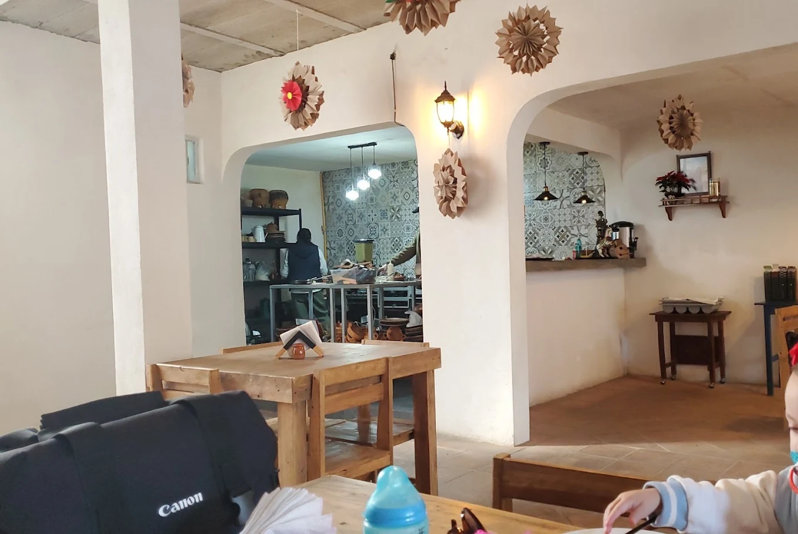
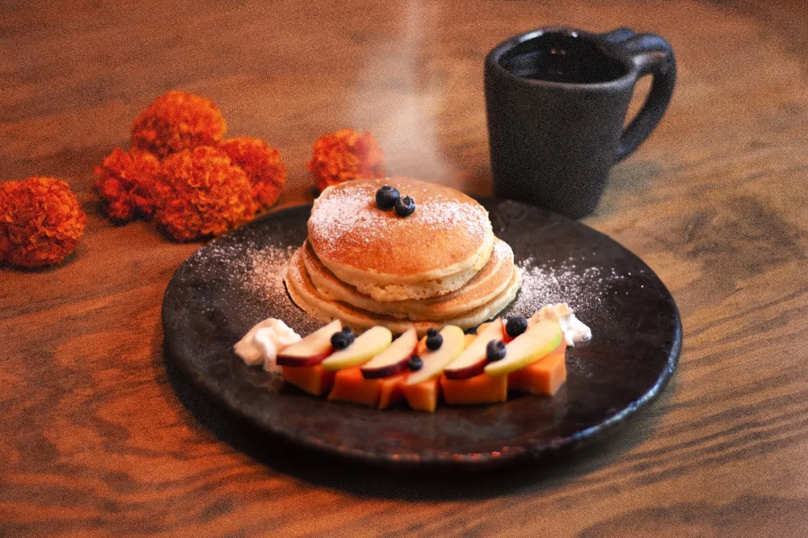
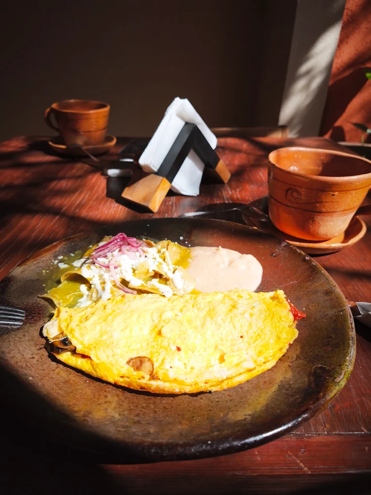
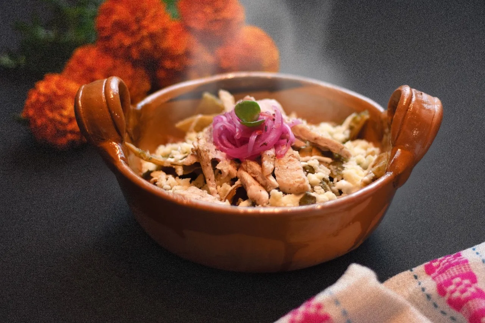

Cocina Tradicional Mexicana
La calidez de un desayuno casero en León
Recetas de familia servidas en cazuela de barro, tortillas hechas al comal y café de olla en un patio acogedor.
El sazón en imágenes


